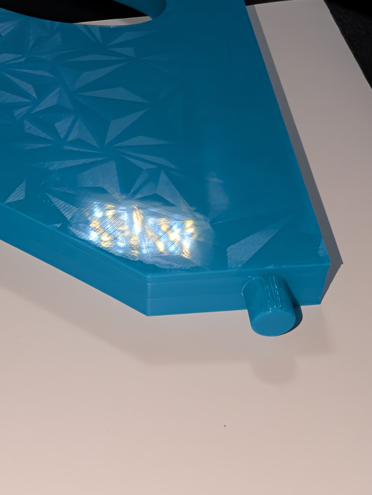
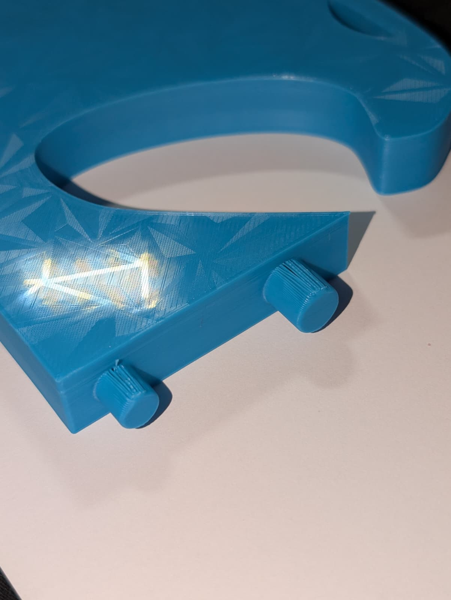
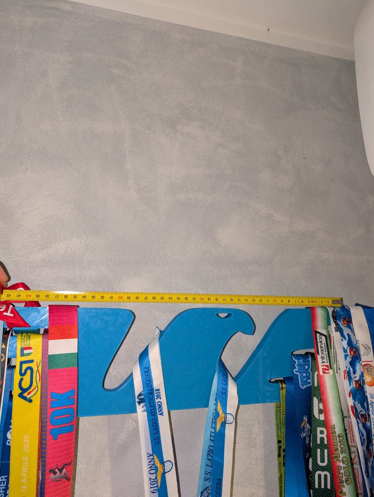
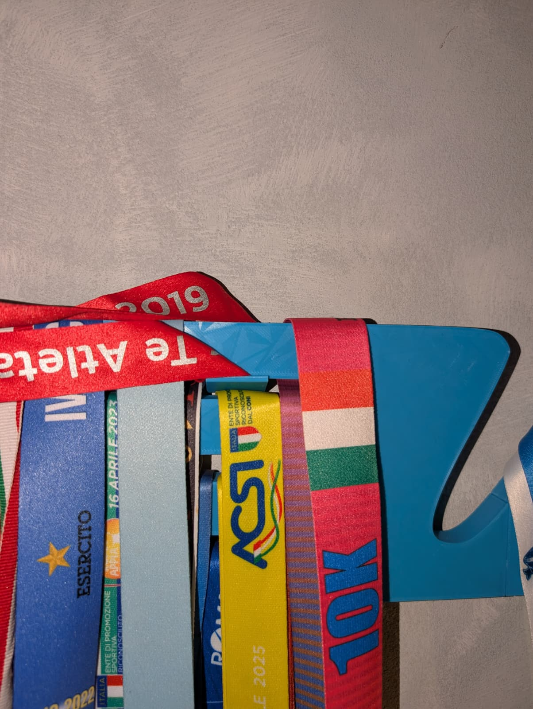

Istruzioni di montaggio — Porta medaglie (3 pezzi)
Il porta medaglie è composto da tre parti separate: la
testa dell’aquila, l’ala destra e
l’ala sinistra.

Materiali consigliati
Per una tenuta resistente consigliamo l’uso di supercolla o Attack.
Assicurati che tutte le superfici siano pulite e asciutte.

Avvertenze di sicurezza
Usa la colla in un ambiente ventilato ed evita il contatto con pelle e
occhi. Tenere fuori dalla portata dei bambini.
Preparazione
-
Controlla i pezzi: la testa ha due tasselli, le ali hanno i fori
corrispondenti.
- Prepara un piano di lavoro protetto.


Assemblaggio
- Applica la colla dentro i fori delle ali.
-
Stendi un sottile strato di colla sulle superfici di giunzione laterali.
- Inserisci i tasselli nelle ali e premi leggermente.
- Lascia indurire in posizione stabile.
-
Attendi la completa polimerizzazione della colla secondo le istruzioni
del produttore.

Fissaggio a parete
I ganci inclusi possono essere montati con viti e tasselli adeguati al
tipo di parete.
- Distanza consigliata tra i ganci: 40 cm.
-
Inserisci i tasselli, avvita i ganci e controlla che siano ben saldi.

Appendere il porta medaglie
Appoggialo sui ganci all’altezza dell’ultima penna delle ali per ottenere
un supporto stabile.

Consigli utili
Per un’eventuale rimozione futura, riscaldare leggermente con un
asciugacapelli può facilitare lo scollamento.